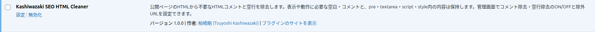
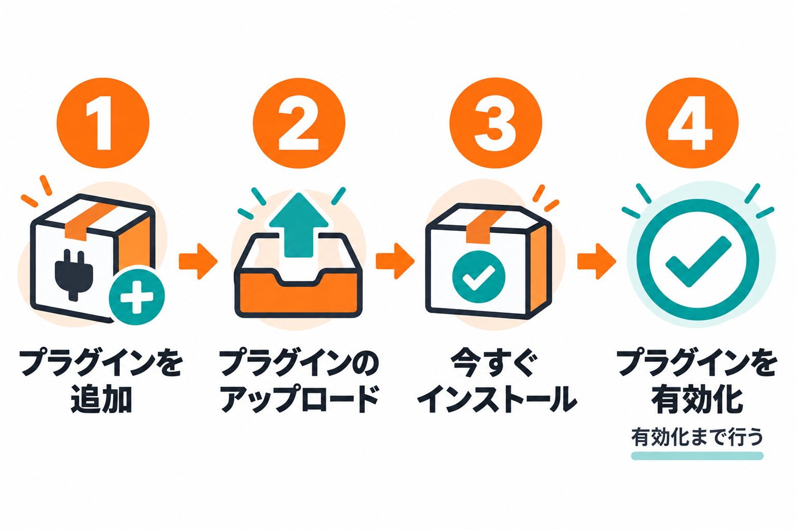

インストール・初期設定
本プラグインをWordPressにインストールして有効化し、設定画面を開くまでの手順です。
インストール手順
1
管理画面の左メニューから「プラグイン」→「プラグインを追加」を開きます。
2
右上の「プラグインのアップロード」をクリックします。
3
プラグインのZIPファイルを選択して「今すぐインストール」をクリックします。
4
インストールが終わったら「プラグインを有効化」をクリックします。
インストールしただけでは動きません。有効化まで行ってください。有効化すると、既定の設定（コメント除去 ON・空行除去 ON・除外URL なし）が用意されます。
設定画面の開き方
設定画面を開く方法は2つあります。どちらでも同じ画面が開きます。
方法1: プラグイン一覧の「設定」リンク
プラグイン一覧（左メニューの「プラグイン」）で、本プラグインの行に「設定」リンクが表示されます。クリックすると設定画面が開きます。

方法2: 左メニューの項目
管理画面の左メニューに「Kashiwazaki SEO HTML Cleaner」が追加されます。クリックすると設定画面が開きます。
初期設定の考え方

有効化直後は、コメント除去と空行除去がどちらもONの状態です。このままでも、公開ページの不要なコメントと空行が取り除かれます。まずはこの状態で公開ページを確認し、表示に問題がないことを確かめてください。特定のページを対象外にしたい場合や、片方だけを使いたい場合は、設定画面の使い方を参照してください。
おすすめ: 設定を変えたら、HTMLクリーニング テストで処理結果を確認してから公開ページを確認すると安心です。